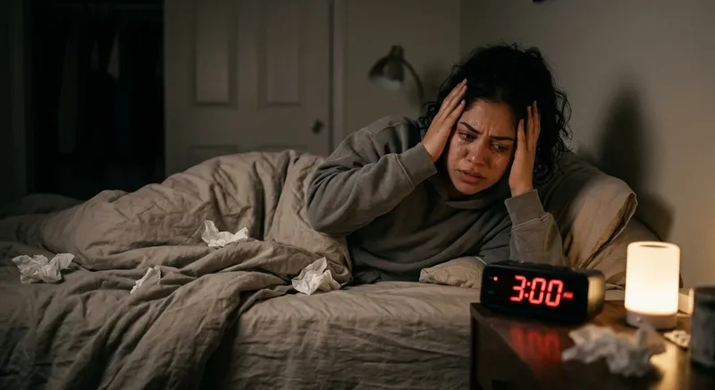

Miras la hora en la pantalla del celular con los ojos entreabiertos. Marca exactamente las 3:03 AM. Otra vez. Tu cuerpo está exhausto, pero tus ojos están abiertos de par en par como si hubieras ingerido tres tazas de café espresso antes de recostarte. En cuestión de segundos, la calma de la noche es sepultada por una marejada de pensamientos aleatorios, deudas, pendientes de la oficina o recuerdos dolorosos. Te preguntas con rabia y desesperación por qué te despiertas a las 3 00 am y qué hacer según la neurociencia para apagar esta pesadilla recurrente.
No se trata de una maldición mística, ni de una casualidad cósmica. La neurociencia moderna ha descubierto que despertar abruptamente en el tercer tercio de la noche es un síntoma directo de un cortocircuito bioquímico en tu cerebro. Entender qué lo provoca es el primer paso para desactivar la alarma interna que destroza tu rendimiento diario.
⚠️ EL ERROR FATAL DE LAS 3:00 AM
Quedarte en la cama intentando "forzar" el sueño activará de inmediato tu corteza prefrontal. La desesperación por ver cómo pasan los minutos libera adrenalina, convirtiendo una micro-despertada fisiológica natural en un ataque de ansiedad nocturna de dos horas.
La química detrás del fenómeno: La tormenta de cortisol y glucosa
Para entender cómo apagar la mente para dormir rápido tras un despertar a las 3:00 AM, primero debes comprender la arquitectura del sueño. Durante la primera mitad de la noche, tu cuerpo prioriza el sueño NREM (no REM), caracterizado por ondas lentas Delta encargadas de la reparación física e inmunológica. Sin embargo, alrededor de las 3:00 AM, el ciclo del sueño cambia radicalmente hacia fases REM más ligeras.
A esta hora exacta ocurre un fenómeno fisiológico crítico: el pico del ciclo del cortisol. Si tu sistema nervioso ha acumulado estrés crónico durante el día, tu hígado agota las reservas de glucógeno nocturno. Para evitar que tu glucosa caiga a niveles peligrosos, tus glándulas suprarrenales disparan una micro-dosis de cortisol y adrenalina. En un cerebro sano, esto pasa desapercibido; en un cerebro sobrecargado, esta descarga funciona como un verdadero "choc eléctrico" biológico.
- Agotamiento de Glucógeno Hepático: El hígado se queda sin combustible a mitad de la noche, obligando al cuerpo a responder con hormonas de estrés.
- Transición a Fase REM: Tu cerebro pasa de un estado de somnolencia profunda a una actividad eléctrica cerebral rápida (ondas Beta), haciéndote vulnerable al despertar.
- Hiperactivación de la Amígdala: Sin el freno de la corteza prefrontal (que aún está semisepultada en el sueño), la amígdala interpreta el despertar como un peligro inminente y busca amenazas.
- Pico de Rumiación Automática: La mente intenta explicar la sensación física de taquicardia asociándola a problemas reales o imaginarios de tu vida.
Por qué los audios de YouTube para el insomnio no funcionan (El engaño de la compresión)
La reacción desesperada de la mayoría de las personas al quedarse despiertas a las 3:00 AM es buscar un audio binaural para dormir en 5 minutos sin pastillas en plataformas gratuitas como YouTube o Spotify. Se colocan los auriculares con la esperanza de ser guiados hacia el descanso, pero tras 40 minutos de ruidos de lluvia o música suave, la mente sigue tan acelerada como al inicio.
¿Por qué sucede esto? La respuesta es un hecho técnico irrefutable: por qué los audios de youtube para insomnio no funcionan se reduce a la compresión destructiva de archivos. Las plataformas de streaming comprimen el audio original utilizando codecs de pérdida (como MP3 a 128 kbps o AAC). Este algoritmo recorta brutalmente las microfrecuencias altas y bajas inaudibles para ahorrar ancho de banda.
El problema científico radica en que el arrastre neuroacústico (el estímulo físico capaz de obligar a tus neuronas a cambiar de ondas Beta a Delta) requiere la pulcritud absoluta de la onda senoidal. Al comprimir el archivo, el estímulo electromagnético se destruye por completo, dejando únicamente un sonido de fondo agradable pero incapaz de resincronizar la química cerebral.
¿Cansado de ver pasar las horas en el reloj a las 3:00 AM?
No luches contra la química de tu cerebro con audios comprimidos de mala calidad. Descubre cómo la estimulación acústica de espectro puro en alta definición de QuantumAudio® puede apagar la sobreactividad neuronal de tu amígdala y devolverte al sueño profundo sin esfuerzo.
Descubrir el Poder de QuantumAudio®La solución de la Neuroacústica Pasiva: Cómo apagar el sobrepensamiento sin fármacos
Cuando te despiertas en medio de la noche, tomar una pastilla para dormir es una pésima opción: tarda entre 45 y 60 minutos en hacer efecto, altera la estructura del sueño REM y te deja una sensación de "resaca" cerebral durante todo el día siguiente. La alternativa científica más avanzada es el Arrastre Neuroacústico de Escucha Pasiva .
Este proceso aprovecha la Respuesta de Seguimiento de Frecuencia (FFR) del cerebro. Si se introduce un pulso acústico estéreo diseñado con absoluta precisión matemática en una frecuencia diferencial de 2.5 Hz (Onda Delta pura), el cerebro no puede evitar acoplarse a ese ritmo. Las descargas eléctricas neuronales que causan el sobrepensamiento disminuyen gradualmente su velocidad hasta coordinarse con la frecuencia de entrada.
"Llevaba más de 8 meses despertándome entre 3:00 AM y 3:30 AM sin falta. La ansiedad de saber que tenía que trabajar al día siguiente me destruía la cabeza. La primera noche que utilicé el archivo máster WAV de QuantumAudio, recuerdo haber escuchado los primeros minutos de vibración... y lo siguiente fue sonar la alarma de las 7:00 AM. Fue un alivio biológico indescriptible."
Protocolo de emergencia de 4 pasos si te despiertas esta noche
Si la alarma invisible de tu cuerpo te despierta a las 3:00 AM esta misma noche, aplica de inmediato este protocolo diseñado para evitar que el cortisol tome el control de tu sistema nervioso:
- Cero verificación de hora o pantallas: No mires la hora ni enciendas el teléfono. La luz azul detiene la síntesis residual de melatonina y la hora desencadena el cálculo ansioso de las horas de sueño restantes.
- Respiración Somática 4-7-8: Inhala por la nariz en 4 segundos, mantén el aire durante 7 segundos y exhala lentamente por la boca en 8 segundos. Esto estimula el nervio vago y desacelera la frecuencia cardíaca.
- Postura de Inmovilidad Consciente: Mantén el cuerpo totalmente relajado sin cambiar bruscamente de posición. Moverte enérgicamente envía señales al cerebro de que estás en estado de vigilia.
- Activación por Neuroestimulación HD: Colócate tus auriculares y reproduce una arquitectura sonora sin compresión de calidad máster de 24 bits. Permite que las frecuencias Delta hagan el trabajo de arrastre pasivo sin intentar "forzar" la mente a dormir.
Recupera tus noches y destruye el insomnio de mantenimiento
Tu salud, tu memoria y tu equilibrio hormonal dependen de un descanso sin interrupciones. Deja de sufrir los despertares de las 3:00 AM y experimenta la neuroestimulación sonora directa con QuantumAudio® .
Acceder al Sistema QuantumAudio® HoyEl fin de los despertares nocturnos está en tu biología
Despertarse a las 3:00 AM no es un destino inevitable ni un rasgo permanente de tu personalidad. Es simplemente una señal de auxilio de un sistema nervioso descalibrado, sobrecargado de estrés y atrapado en la trampa del cortisol nocturno. Intentar resolver este problema con fuerza de voluntad o remedios caseros incompletos solo añade más frustración al proceso.
La física y la neurociencia moderna te ofrecen hoy una vía de acceso directo al sistema nervioso central: la estimulación bioacústica pura sin compresión. Al darle a tu cerebro la señal electromagnética exacta que necesita para desactivar la amígdala y retomar las ondas Delta, el sueño continuo, profundo y reparador deja de ser un lujo inalcanzable y vuelve a ser lo que siempre debió ser: tu estado biológico natural.
No esperes a que otra noche de sobrepensamiento y fatiga arruine tu siguiente día. Dale a tu mente la herramienta neuroacústica que necesita para silenciar el ruido y redescubre el placer de dormir de corrido hasta que el sol aparezca.